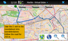

Are you attending the Desktop Summit 2011 in Berlin? Do you own a Nokia N900? Then we've got something for you.
The Marble Desktop Summit 2011 package contains data for offline usage in Berlin. Find your way and explore Berlin during the Desktop Summit. Install the Marble Desktop Summit 2011 package to get offline OSM maps, offline routing and offline search data for Berlin in a single package.
To install the package, please do the following:
- Download marble-desktopsummit_2011-08-02_armel.deb somewhere to your Nokia N900
- Open the file manager and select the downloaded file
- Let the package manager install the package
Please note: Marble 1.2.0 is a required dependency. Please install it from extras-testing.
Installing the package directly by clicking on the link above from the N900 works only if there is enough space available in the root system, which often is not the case.


Offline Route Planning
Rent a car at the airport and have Marble calculate the route to your hotel. You can use the bookmarks to select start and destination quickly.

Offline Pedestrian Routing
Want to go to the hotel from the conference venue? Marble guides your walk to the next subway station.


{kind=link}
{kind=link}
{kind=link}
{kind=link}
Maintained by the Marble developers.